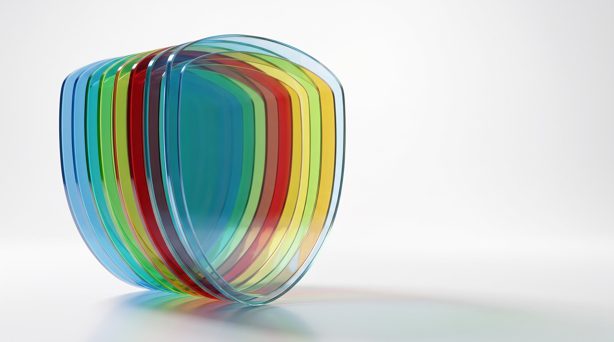

Introducing
fast.site
Engineered for one thing.
Speed.
Make your website
faster.
Keep your hosting.
Edge caching.
Every page, closer to every visitor.
Faster images.
Automatically.
JPG
hero.jpg
303.4 KB
−0
%
Lighter. Same picture.

Protection.
Built in.
Faster.
Lighter.
Safer.
Simpler.
Make your website faster.
Keep your hosting.
fast.site
· Try it free for 7 days